Copyright 2019 Piet Stam. The code and the README.md documentation are licensed under the Creative Commons Attribution 4.0 International license.
We applied the original work of Rasmus Baath to the Dutch Eredivisie football competition. With r-bayesian-football-odds we estimated the odds of football matches in the last two weeks of the 2018/2019 Dutch Eredivisie football competiton. We provide the code and evaluate the results of our predictions.
This piece of work is based on the works of Rasmus Baath. Rasmus Baath submitted his code to the UseR 2013 data analysis contest and licensed it under the Creative Commons Attribution 3.0 Unported license.
He predicted the results of the 50 last matches of the 2012/2013 Spanish LaLiga season. He used data of the 2008/09-2012/13 seasons (5 seasons in total) to estimate his regression model in a Bayesian way. See this thread for an intuitive explanation of the difference between the bayesian approach and the conventional approaches of linear regression and maximum likelihood.
I slightly adpated his code to predict the results of the last two competition rounds (that is, the last 18 matches) of the 2018/2019 Dutch Eredivisie season. These predictions are based on soccer match data of the 2014/15-2018/19 seasons (5 seasons in total). The source of these data is here. Out of the three model specifications that Rasmus developed, I used the most sophisticated model that allowed for year-to-year variability in team skill (called “iteration 3” by Rasmus).
You can find my code at GitHub. Rasmus deserves all the credits, I deserve all the blame in case of any errors in my application to the Dutch football competition.
The first thing to notice is that not all teams are equally good. Therefore, it will be assumed that all teams have a latent skill variable and the skill of a team minus the skill of the opposing team defines the predicted outcome of a game. As the number of goals are assumed to be Poisson distributed it is natural that the skills of the teams are on the log scale of the mean of the distribution.
In its simplest form, the distribution of the number of goals for team \(i\) when facing team \(j\) is then
\[Goals_{i,j} \sim \text{Poisson}(\lambda_{i,j})\]
\[\log(\lambda_{i,j}) = \text{baseline} + \text{skill}_i - \text{skill}_j\]
where baseline is the log average number of goals when both teams are equally good. Note that this model description does not capture the variation in the number of goals among football seasons and between home vs away teams.
If we do allow for the latter type of variation, then the distribution of the goal outcome of a match between home team \(i\) and away team \(j\) in season \(t\) can be described as follows:
\[HomeGoals_{t,i,j} \sim \text{Poison}(\lambda_{\text{home},t,i,j})\] \[AwayGoals_{t,i,j} \sim \text{Poison}(\lambda_{\text{away},t,i,j})\] \[\log(\lambda_{\text{home},t,i,j}) = \text{baseline}_{\text{home},t} + \text{skill}_{t,i} - \text{skill}_{t,j}\] \[\log(\lambda_{\text{away},t,i,j}) = \text{baseline}_{\text{away},t} + \text{skill}_{t,j} - \text{skill}_{t,i}\]
Note that the baseline is split into home_baseline and away_baseline in order to account for the home advantage.
I set the prior distributions over the baseline and the skill of all \(n\) teams in season \(t\) to:
\[\text{baseline}_{\text{home},t} \sim \text{Normal}(0, 4^2)\] \[\text{baseline}_{\text{away},t} \sim \text{Normal}(0, 4^2)\]
I set the prior distributions over the skill of all \(n\) teams in season \(t\) to:
\[\text{skill}_{t,1 \ldots n} \sim \text{Normal}(\text{skill}_{t-1,1 \ldots n}, \sigma_{\text{seasons}}^2)\] \[\sigma_\text{seasons} \sim \text{Uniform}(0, 3)\]
and the priors over the skill of all \(n\) teams in their \(first\) season modeled as:
\[\text{skill}_{1,1 \ldots n} \sim \text{Normal}(\mu_\text{teams}, \sigma_{\text{teams}}^2)\] \[\mu_\text{teams} \sim \text{Normal}(0, 4^2)\] \[\sigma_\text{teams} \sim \text{Uniform}(0, 3)\]
We choose very vague priors. For example, the prior on the baseline have a SD of 4 but since this is on the log scale of the mean number of goals it corresponds to one SD from the mean \(0\) covering the range of \([0.02, 54.6]\) goals. A very wide prior indeed.
We first read the Dutch soccer match data of the 2014/15-2018/19 Dutch Eredivisie seasons from the original csv-files and cache them. The result is a database called eredivisie.
from_year <- 2014
to_year <- 2019
source(paste0("functions/Import_Data_Eredivisie.R"))Then the cached eredivisie data are cleaned and new variables are created.
eredivisie <- eredivisie %>%
mutate(MatchResult = sign(HomeGoals - AwayGoals)) # -1 Away win, 0 Draw, 1 Home win
# Creating a data frame d with only the complete match results
d <- na.omit(eredivisie)
# Lists with the unique names of all teams and all seasons in the database
teams <- unique(c(d$HomeTeam, d$AwayTeam))
seasons <- unique(d$Season)
# A list for JAGS with the data from d where the strings are coded as integers
data_list <- list(HomeGoals = d$HomeGoals, AwayGoals = d$AwayGoals,
HomeTeam = as.numeric(factor(d$HomeTeam, levels=teams)),
AwayTeam = as.numeric(factor(d$AwayTeam, levels=teams)),
Season = as.numeric(factor(d$Season, levels=seasons)),
n_teams = length(teams), n_games = nrow(d),
n_seasons = length(seasons))The data set eredivisie contains data from 5 different seasons. In this model we allow for variability in year-to-year team performance. This variablitity in team performance can be demonstrated by the following diagram, which shows that some teams do not even participate in all seasons in the eredivisie data set, as a result of dropping out of the first division:
qplot(Season, HomeTeam, data=d, ylab="Team", xlab = "Season")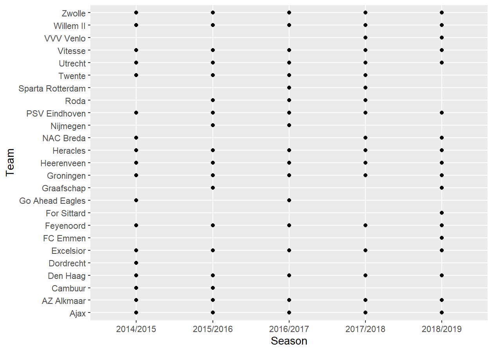
Turning this into a JAGS model results in the following string. Note that the model loops over all seasons and all match results. JAGS parameterizes the normal distribution with precision (the reciprocal of the variance) instead of variance so the hyper priors have to be converted. Finally, we "anchor" the skill of one team to a constant otherwise the mean skill can drift away freely. Doing these adjustments results in the following model description:
m3_string <- "model {
for(i in 1:n_games) {
HomeGoals[i] ~ dpois(lambda_home[Season[i], HomeTeam[i],AwayTeam[i]])
AwayGoals[i] ~ dpois(lambda_away[Season[i], HomeTeam[i],AwayTeam[i]])
}
for(season_i in 1:n_seasons) {
for(home_i in 1:n_teams) {
for(away_i in 1:n_teams) {
lambda_home[season_i, home_i, away_i] <- exp( home_baseline[season_i] + skill[season_i, home_i] - skill[season_i, away_i])
lambda_away[season_i, home_i, away_i] <- exp( away_baseline[season_i] + skill[season_i, away_i] - skill[season_i, home_i])
}
}
}
skill[1, 1] <- 0
for(j in 2:n_teams) {
skill[1, j] ~ dnorm(group_skill, group_tau)
}
group_skill ~ dnorm(0, 0.0625)
group_tau <- 1/pow(group_sigma, 2)
group_sigma ~ dunif(0, 3)
home_baseline[1] ~ dnorm(0, 0.0625)
away_baseline[1] ~ dnorm(0, 0.0625)
for(season_i in 2:n_seasons) {
skill[season_i, 1] <- 0
for(j in 2:n_teams) {
skill[season_i, j] ~ dnorm(skill[season_i - 1, j], season_tau)
}
home_baseline[season_i] ~ dnorm(home_baseline[season_i - 1], season_tau)
away_baseline[season_i] ~ dnorm(away_baseline[season_i - 1], season_tau)
}
season_tau <- 1/pow(season_sigma, 2)
season_sigma ~ dunif(0, 3)
}"We then run this model directly from R using RJAGS and the textConnection function. This takes about half an hour on my computer, but of course this depends on the configuration at hand.
# Compiling the model
m3 <- jags.model(textConnection(m3_string), data=data_list, n.chains=3, n.adapt=10000)
# Burning some samples on the altar of the MCMC god
update(m3, 10000)
# Generating MCMC samples
s3 <- coda.samples(m3, variable.names=c("home_baseline", "away_baseline","skill", "season_sigma", "group_sigma", "group_skill"), n.iter=40000, thin=8)
# Merging the three MCMC chains into one matrix
ms3 <- as.matrix(s3)The following graphs shows the trace plots and probability distributions of the team mean, team sigma and season sigma parameters, respectively.
plot(s3[, "group_skill"])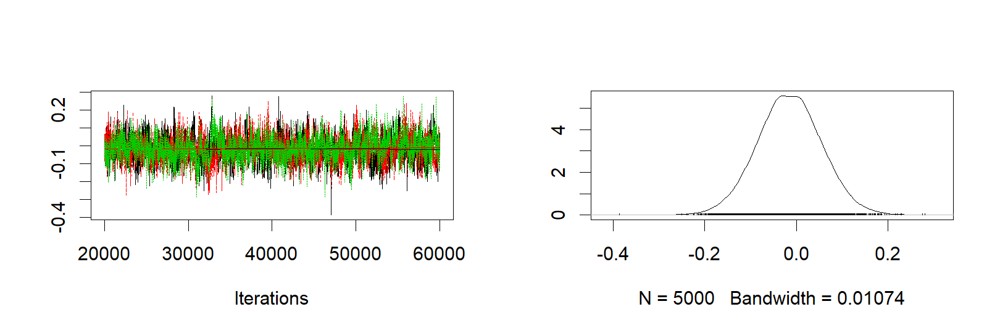
plot(s3[, "group_sigma"])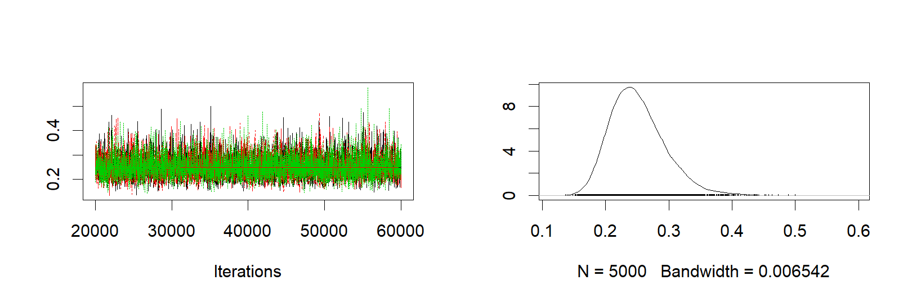
plot(s3[, "season_sigma"])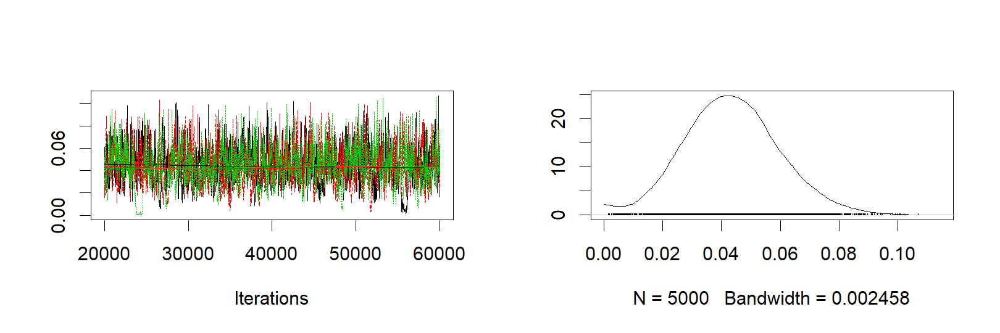
We can also calculate the default home advantage by looking at the difference between exp(home_baseline) - exp(away_baseline). The next graph shows that there is a home advantage of more than 0.4 goals, on average, and it differs significantly from zero.
plotPost(exp(ms3[,col_name("home_baseline",to_year-from_year)]) - exp(ms3[,col_name("away_baseline",to_year-from_year)]), compVal = 0, xlab = "Home advantage in number of goals")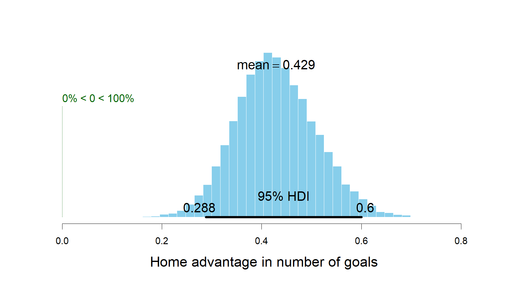
## mean median mode hdiMass
## Home advantage in number of goals 0.4288232 0.4248015 0.4162575 0.95
## hdiLow hdiHigh compVal pcGTcompVal
## Home advantage in number of goals 0.2880692 0.6003385 0 1
## ROPElow ROPEhigh pcInROPE
## Home advantage in number of goals NA NA NAIn the eredivisie data set included in this project, the results of the 18 last games of the 2018/2019 season are missing. Using our model we can now both predict and simulate the outcomes of these 18 games. The R code below calculates a number of measures for each game (both the games with known and unknown outcomes):
n <- nrow(ms3)
m3_pred <- sapply(1:nrow(eredivisie), function(i) {
home_team <- which(teams == eredivisie$HomeTeam[i])
away_team <- which(teams == eredivisie$AwayTeam[i])
season <- which(seasons == eredivisie$Season[i])
home_skill <- ms3[, col_name("skill", season, home_team)]
away_skill <- ms3[, col_name("skill", season, away_team)]
home_baseline <- ms3[, col_name("home_baseline", season)]
away_baseline <- ms3[, col_name("away_baseline", season)]
home_goals <- rpois(n, exp(home_baseline + home_skill - away_skill))
away_goals <- rpois(n, exp(away_baseline + away_skill - home_skill))
home_goals_table <- table(home_goals)
away_goals_table <- table(away_goals)
match_results <- sign(home_goals - away_goals)
match_results_table <- table(match_results)
mode_home_goal <- as.numeric(names(home_goals_table)[ which.max(home_goals_table)])
mode_away_goal <- as.numeric(names(away_goals_table)[ which.max(away_goals_table)])
match_result <- as.numeric(names(match_results_table)[which.max(match_results_table)])
rand_i <- sample(seq_along(home_goals), 1)
c(mode_home_goal = mode_home_goal, mode_away_goal = mode_away_goal, match_result = match_result,
mean_home_goal = mean(home_goals), mean_away_goal = mean(away_goals),
rand_home_goal = home_goals[rand_i], rand_away_goal = away_goals[rand_i],
rand_match_result = match_results[rand_i])
})
m3_pred <- t(m3_pred)First let's compare the distribution of the actual number of goals in the data with the predicted mode, mean and randomized number of goals for all the games (focusing on the number of goals for the home team).
First the actual distribution of the number of goals for the home teams.
hist(eredivisie$HomeGoals, breaks= (-1:max(eredivisie$HomeGoals, na.rm=TRUE)) + 0.5, xlim=c(-0.5, 10), main = "Distribution of the number of goals\nscored by a home team in a match",
xlab = "")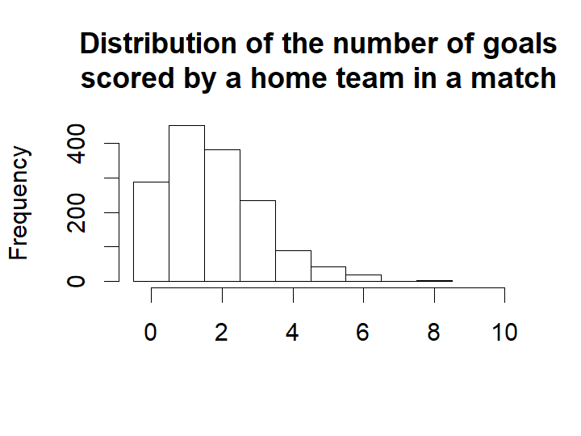
This next plot shows the distribution of the modes from the predicted distribution of home goals from each game. That is, what is the most probable outcome, for the home team, in each game.
hist(m3_pred[ , "mode_home_goal"], breaks= (-1:max(m3_pred[ , "mode_home_goal"])) + 0.5, xlim=c(-0.5, 10),
main = "Distribution of predicted most \nprobable score by a home team in\na match",
xlab = "")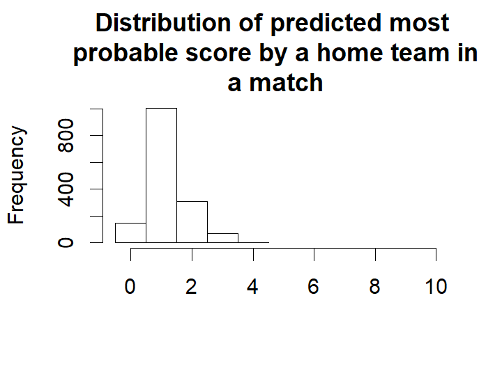
For almost all games the single most likely number of goals is one. Actually, if you know nothing about an Eredivisie game, betting on one goal for the home team is 78 % of the times the best bet.
Let's instead look at the distribution of the predicted mean number of home goals in each game.
hist(m3_pred[ , "mean_home_goal"], breaks= (-1:max(m3_pred[ , "mean_home_goal"])) + 0.5, xlim=c(-0.5, 10),
main = "Distribution of predicted mean \n score by a home team in a match",
xlab = "")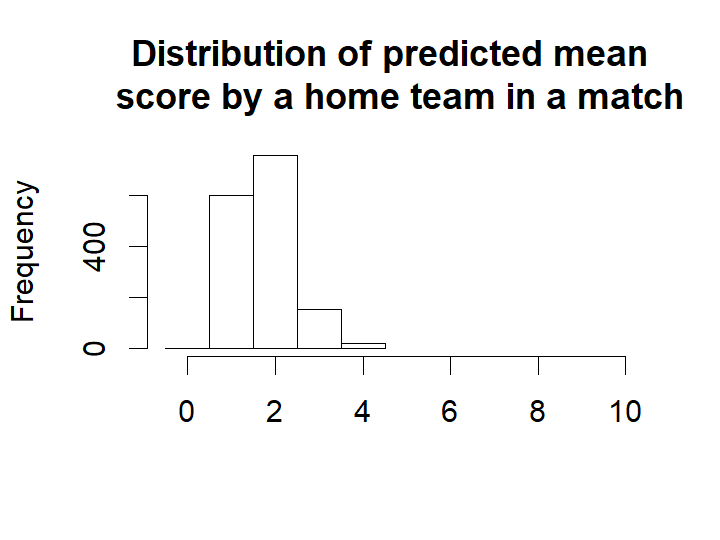
For most games the expected number of goals are 2. That is, even if your safest bet is one goal you would expect to see around two goals.
The distribution of the mode and the mean number of goals doesn’t look remotely like the actual number of goals. This was not to be expected, we would however expect the distribution of randomized goals (where for each match the number of goals has been randomly drawn from that match’s predicted home goal distribution) to look similar to the actual number of home goals. Looking at the histogram below, this seems to be the case.
hist(m3_pred[ , "rand_home_goal"], breaks= (-1:max(m3_pred[ , "rand_home_goal"])) + 0.5, xlim=c(-0.5, 10),
main = "Distribution of randomly drawn \n score by a home team in a match",
xlab = "")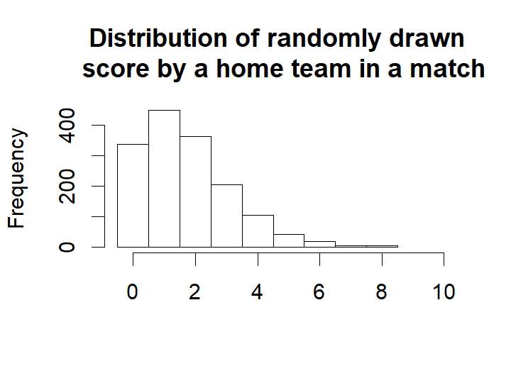
We can also look at how well the model predicts the data. This should probably be done using cross validation, but as the number of effective parameters are much smaller than the number of data points a direct comparison should at least give an estimated prediction accuracy in the right ballpark.
mean(eredivisie$HomeGoals == m3_pred[ , "mode_home_goal"], na.rm=T)## [1] 0.3150232mean((eredivisie$HomeGoals - m3_pred[ , "mean_home_goal"])^2, na.rm=T)## [1] 1.509597So on average the model predicts the correct number of home goals 31% of the time and guesses the average number of goals with a mean squared error of 1.51. Now we’ll look at the actual and predicted match outcomes. The graph below shows the match outcomes in the data with 1 being a home win, 0 being a draw and -1 being a win for the away team.
hist(eredivisie$MatchResult, breaks= (-2:1) + 0.5, xlim=c(-1.5, 1.5), ylim=c(0, 1000), main = "Actual match results",
xlab = "")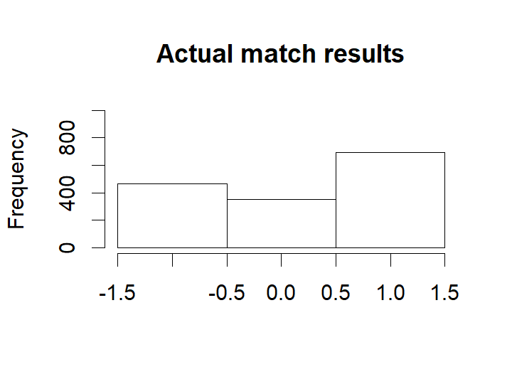
Now looking at the most probable outcomes of the matches according to the model.
hist(m3_pred[ , "match_result"], breaks= (-2:1) + 0.5, xlim=c(-1.5, 1.5), ylim=c(0, 1000), main = "Predicted match results",
xlab = "")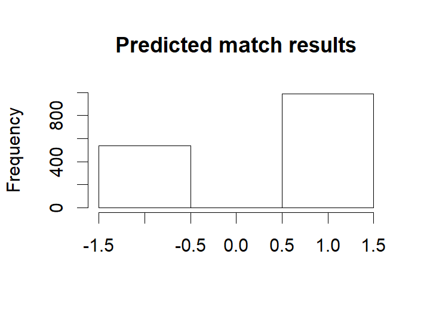
For almost all matches the safest bet is to bet on the home team. While draws are not uncommon it is never the safest bet.
As in the case with the number of home goals, the randomized match outcomes have a distribution similar to the actual match outcomes:
hist(m3_pred[ , "rand_match_result"], breaks= (-2:1) + 0.5, xlim=c(-1.5, 1.5), ylim=c(0, 1000), main = "Randomized match results",
xlab = "")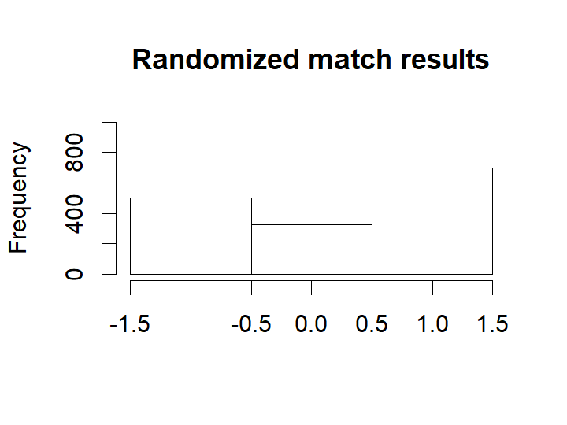
mean(eredivisie$MatchResult == m3_pred[ , "match_result"], na.rm=T)## [1] 0.563865The model predicts the correct match outcome (i.e. home team wins / a draw / away team wins) 57% of the time. Pretty good!
We’ll start by ranking the teams of the Eredivisie using the estimated skill parameters from the 2018/2019 season, which are based on the estimation sample of the five seasons 2014/2015-2018/2019. Note that for one of the teams the skill parameter is “anchored at zero”. This “anchoring” is done for the very same "identification" reason that one of the parameters in a traditional logit analysis is always set to zero by default: the value of a parameter automatically follows if you already know all the other parameters in your model and given the fact that probabilities always sum up to 1 in total.
Consequently, as Rasmus noted before, the skill parameters are difficult to interpret as they are relative to the skill of the team that had its skill parameter “anchored” at zero. To put them on a more interpretable scale the skill paramters are first zero centered by subtracting the mean skill of all teams. Then he added the home baseline and exponentiated the resulting values. These rescaled skill parameters are now on the scale of expected number of goals when playing as a home team.
team_skill <- ms3[, str_detect(string=colnames(ms3), paste0("skill\\[",to_year-from_year,","))]
team_skill <- (team_skill - rowMeans(team_skill)) + ms3[, paste0("home_baseline[",to_year-from_year,"]")]
team_skill <- exp(team_skill)
colnames(team_skill) <- teams
team_skill <- team_skill[,order(colMeans(team_skill), decreasing=T)]
old_par <- par(mar=c(2,0.7,0.7,0.7), xaxs='i')
caterplot(team_skill, labels.loc="above", val.lim=c(0.7, 3.8))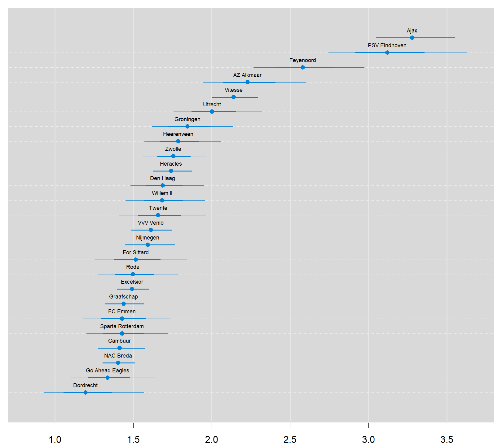
par(old_par)Two teams are clearly ahead of the rest, Ajax and PSV. Let's look at the credible difference between these two teams. Ajax is a better team than PSV with a probabilty of 74%, i.e. the odds in favor of Ajax are 74% / 26% = 3. So, on average, PSV only wins one out of four games that they play against Ajax.
plotPost(team_skill[, "Ajax"] - team_skill[, "PSV Eindhoven"], compVal = 0, xlab = "<- PSV vs Ajax ->")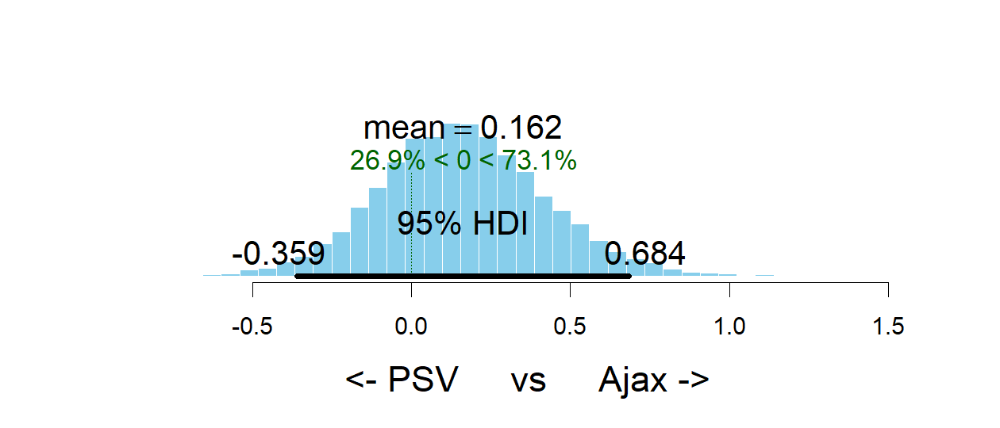
## mean median mode hdiMass hdiLow
## <- PSV vs Ajax -> 0.1616095 0.1535391 0.1467396 0.95 -0.3586123
## hdiHigh compVal pcGTcompVal ROPElow ROPEhigh
## <- PSV vs Ajax -> 0.6842824 0 0.7312 NA NA
## pcInROPE
## <- PSV vs Ajax -> NANow that we’ve checked that the model reasonably predicts the Eredivisie history let's predict the Eredivisie endgame!
At the time when I executed my version of this model applied to the Dutch Eredivisie competition (2019-05-10), most of the matches in the 2018/2019 season had already been played. Yet two out of 34 competition rounds had to be played (that is, competition rounds 33 and 34). With these two rounds still to go, Ajax and PSV both have 80 points, but Ajax leads the competition as their goal difference is larger (111-30 = 81) than that of PSV (95-24 = 71). The code below displays the predicted mean and mode number of goals for the endgame and the predicted winner of each game.
eredivisie_forecast <- eredivisie[is.na(eredivisie$HomeGoals), c("Season", "Week", "HomeTeam", "AwayTeam")]
m3_forecast <- m3_pred[is.na(eredivisie$HomeGoals),]
eredivisie_forecast$mean_home_goals <- round(m3_forecast[,"mean_home_goal"], 1)
eredivisie_forecast$mean_away_goals <- round(m3_forecast[,"mean_away_goal"], 1)
eredivisie_forecast$mode_home_goals <- m3_forecast[,"mode_home_goal"]
eredivisie_forecast$mode_away_goals <- m3_forecast[,"mode_away_goal"]
eredivisie_forecast$predicted_winner <- ifelse(m3_forecast[ , "match_result"] == 1, eredivisie_forecast$HomeTeam,
ifelse(m3_forecast[ , "match_result"] == -1, eredivisie_forecast$AwayTeam, "Draw"))
rownames(eredivisie_forecast) <- NULL
print(xtable(eredivisie_forecast, align="cccccccccc"), type="html")| Season | Week | HomeTeam | AwayTeam | mean_home_goals | mean_away_goals | mode_home_goals | mode_away_goals | predicted_winner | |
|---|---|---|---|---|---|---|---|---|---|
| 1 | 2018/2019 | 40 | Ajax | Utrecht | 2.90 | 0.80 | 2.00 | 0.00 | Ajax |
| 2 | 2018/2019 | 40 | AZ Alkmaar | PSV Eindhoven | 1.30 | 1.90 | 1.00 | 1.00 | PSV Eindhoven |
| 3 | 2018/2019 | 40 | Groningen | For Sittard | 2.10 | 1.10 | 2.00 | 1.00 | Groningen |
| 4 | 2018/2019 | 40 | Feyenoord | Den Haag | 2.70 | 0.90 | 2.00 | 0.00 | Feyenoord |
| 5 | 2018/2019 | 40 | Heerenveen | NAC Breda | 2.20 | 1.00 | 2.00 | 0.00 | Heerenveen |
| 6 | 2018/2019 | 40 | Vitesse | Graafschap | 2.60 | 0.90 | 2.00 | 0.00 | Vitesse |
| 7 | 2018/2019 | 40 | Willem II | FC Emmen | 2.10 | 1.10 | 2.00 | 1.00 | Willem II |
| 8 | 2018/2019 | 40 | Zwolle | VVV Venlo | 1.90 | 1.20 | 1.00 | 1.00 | Zwolle |
| 9 | 2018/2019 | 40 | Heracles | Excelsior | 2.00 | 1.10 | 2.00 | 1.00 | Heracles |
| 10 | 2018/2019 | 40 | Den Haag | Willem II | 1.70 | 1.30 | 1.00 | 1.00 | Den Haag |
| 11 | 2018/2019 | 40 | Graafschap | Ajax | 0.80 | 3.00 | 0.00 | 2.00 | Ajax |
| 12 | 2018/2019 | 40 | Utrecht | Heerenveen | 2.00 | 1.20 | 2.00 | 1.00 | Utrecht |
| 13 | 2018/2019 | 40 | NAC Breda | Zwolle | 1.40 | 1.70 | 1.00 | 1.00 | Zwolle |
| 14 | 2018/2019 | 40 | PSV Eindhoven | Heracles | 3.10 | 0.70 | 2.00 | 0.00 | PSV Eindhoven |
| 15 | 2018/2019 | 40 | FC Emmen | Groningen | 1.30 | 1.70 | 1.00 | 1.00 | Groningen |
| 16 | 2018/2019 | 40 | Excelsior | AZ Alkmaar | 1.20 | 2.00 | 1.00 | 1.00 | AZ Alkmaar |
| 17 | 2018/2019 | 40 | For Sittard | Feyenoord | 1.00 | 2.30 | 1.00 | 2.00 | Feyenoord |
| 18 | 2018/2019 | 40 | VVV Venlo | Vitesse | 1.30 | 1.70 | 1.00 | 1.00 | Vitesse |
These predictions are perfectly useful if you want to bet on the likely winner of each game. However, they do not reflect how the actual endgame will play out, e.g., there is not a single draw in the predicted_winner column. So at last let's look at a possible version of the Eredivisie endgame by displaying the simulated match results calculated earlier.
eredivisie_sim <- eredivisie[is.na(eredivisie$HomeGoals), c("Season", "Week", "HomeTeam", "AwayTeam")]
eredivisie_sim$home_goals <- m3_forecast[,"rand_home_goal"]
eredivisie_sim$away_goals <- m3_forecast[,"rand_away_goal"]
eredivisie_sim$winner <- ifelse(m3_forecast[ , "rand_match_result"] == 1, eredivisie_forecast$HomeTeam,
ifelse(m3_forecast[ , "rand_match_result"] == -1, eredivisie_forecast$AwayTeam, "Draw"))
rownames(eredivisie_sim) <- NULL
print(xtable(eredivisie_sim, align="cccccccc"), type="html")| Season | Week | HomeTeam | AwayTeam | home_goals | away_goals | winner | |
|---|---|---|---|---|---|---|---|
| 1 | 2018/2019 | 40 | Ajax | Utrecht | 1.00 | 1.00 | Draw |
| 2 | 2018/2019 | 40 | AZ Alkmaar | PSV Eindhoven | 0.00 | 2.00 | PSV Eindhoven |
| 3 | 2018/2019 | 40 | Groningen | For Sittard | 3.00 | 1.00 | Groningen |
| 4 | 2018/2019 | 40 | Feyenoord | Den Haag | 4.00 | 1.00 | Feyenoord |
| 5 | 2018/2019 | 40 | Heerenveen | NAC Breda | 3.00 | 2.00 | Heerenveen |
| 6 | 2018/2019 | 40 | Vitesse | Graafschap | 4.00 | 3.00 | Vitesse |
| 7 | 2018/2019 | 40 | Willem II | FC Emmen | 2.00 | 2.00 | Draw |
| 8 | 2018/2019 | 40 | Zwolle | VVV Venlo | 4.00 | 2.00 | Zwolle |
| 9 | 2018/2019 | 40 | Heracles | Excelsior | 4.00 | 0.00 | Heracles |
| 10 | 2018/2019 | 40 | Den Haag | Willem II | 1.00 | 1.00 | Draw |
| 11 | 2018/2019 | 40 | Graafschap | Ajax | 0.00 | 1.00 | Ajax |
| 12 | 2018/2019 | 40 | Utrecht | Heerenveen | 5.00 | 1.00 | Utrecht |
| 13 | 2018/2019 | 40 | NAC Breda | Zwolle | 2.00 | 1.00 | NAC Breda |
| 14 | 2018/2019 | 40 | PSV Eindhoven | Heracles | 2.00 | 2.00 | Draw |
| 15 | 2018/2019 | 40 | FC Emmen | Groningen | 0.00 | 2.00 | Groningen |
| 16 | 2018/2019 | 40 | Excelsior | AZ Alkmaar | 0.00 | 3.00 | AZ Alkmaar |
| 17 | 2018/2019 | 40 | For Sittard | Feyenoord | 0.00 | 3.00 | Feyenoord |
| 18 | 2018/2019 | 40 | VVV Venlo | Vitesse | 3.00 | 0.00 | VVV Venlo |
Now we see a number of games resulting in a draw. We also see that Ajax and FC Utrecht tie in round 33, which puts PSV on top of the leaderboard! However, in round 34 the image is reversed when PSV and Heracles tie, against all odds. So, in the end, Ajax wins the competition in this possible version of the Eredivisie endgame by their better goal difference.
One of the powers with using Bayesian modeling and MCMC sampling is that once you have the MCMC samples of the parameters it is straight forward to calculate any quantity resulting from these estimates while still retaining the uncertainty of the parameter estimates. So let's look at the predicted distribution of the number of goals for AZ Alkmaar vs PSV Eindhoven game and see if I can use my model to make some money. I’ll start by using the MCMC samples to calculate the distribution of the number of goals for AZ Alkmaar and PSV Eindhoven.
plot_goals <- function(home_goals, away_goals) {
old_par <- par(mar = c(0, 0, 0, 0))
par(mfrow = c(2, 2), mar=rep(2.2, 4))
n_matches <- length(home_goals)
goal_diff <- home_goals - away_goals
match_result <- ifelse(goal_diff < 0, "away_win", ifelse(goal_diff > 0, "home_win", "equal"))
hist(home_goals, xlim = c(-0.5, 10), breaks = (0:100) - 0.5)
hist(away_goals, xlim = c(-0.5, 10), breaks = (0:100) - 0.5)
hist(goal_diff, xlim = c(-6, 6), breaks = (-100:100) - 0.5)
barplot(table(match_result)/n_matches, ylim = c(0, 1))
par(old_par)
}n <- nrow(ms3)
home_team <- which(teams == "AZ Alkmaar")
away_team <- which(teams == "PSV Eindhoven")
season <- which(seasons == paste0(to_year-1,"/",to_year))
home_skill <- ms3[, col_name("skill", season, home_team)]
away_skill <- ms3[, col_name("skill", season, away_team)]
home_baseline <- ms3[, col_name("home_baseline", season)]
away_baseline <- ms3[, col_name("away_baseline", season)]
home_goals <- rpois(n, exp(home_baseline + home_skill - away_skill))
away_goals <- rpois(n, exp(away_baseline + away_skill - home_skill))Looking at summary of these two distributions in the first two graphs below, it shows that AZ and PSV both have the biggest chance to score one goal (as the modus of both distributions equals 1). From the third graph it follows that the most likely goal difference is 0 or -1: either AZ and PSV draw (0), or PSV scores just one more goal than AZ (-1). In case of the latter, PSV turns out to be the match winner.
The fourth graph shows the probability distribution of a PSV win (‘away_win’), a draw (‘equal’) and AZ win (‘home_win’). This graph underlines that a PSV win is a likely scenario: it has a probability of more than 50%. The fact that the balance topples in favor of PSV should then be due to the one goal difference that is attributed a great chance according to the third graph. Note, however, that the probability that PSV will not turn out as the match winner (i.e. a draw or a loss) is still almost 50%.
old_par <- par(mfrow = c(2, 2), mar=rep(2.2, 4))
plot_goals(home_goals, away_goals)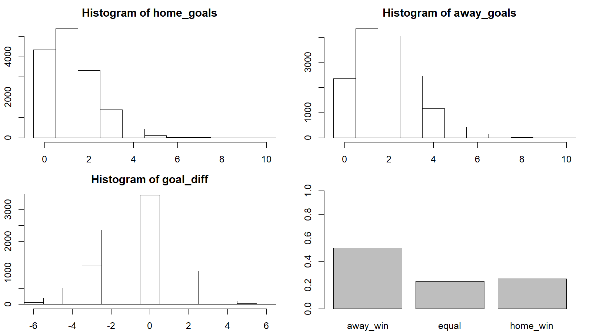
par(old_par)At May 10th, that is just before the start of competition round 33, you got the following payouts (that is, how much would I get back if my bet was successful) for betting on the outcome of this game, after 288 bets being placed on the betting site William Hill
| AZ | Draw | PSV |
|---|---|---|
| 3.90 | 4.00 | 1.78 |
Using my simulated distribution of the number of goals I can calculate the predicted payouts of the model. It appears that the payouts of the model are very close to the payouts that William Hill offers.
1 / c(AZ = mean(home_goals > away_goals), Draw = mean(home_goals == away_goals), PSV = mean(home_goals < away_goals))## AZ Draw PSV
## 3.928759 4.332756 1.943005The most likely result is 1 - 1 with a predicted payout of 9.70, which can be compared to the William Hill payout of 7.50 for this bet. Thus, William Hill thinks that a 1 - 1 draw is even likier than our model predicts. If we want to earn some extra money, we should bet on a 1 - 0 win for AZ, as the William Hill payout is 19 and our model predicts 17.50.
It is also possible to bet on the final goal outcome so let's calculate what payouts my model predicts for different goal outcomes. The payouts that William Hill reports are
| PSV 0 | PSV 1 | PSV 2 | PSV 3 | PSV 4 | |
|---|---|---|---|---|---|
| AZ 0 | 21 | 12 | 12 | 17 | 29 |
| AZ 1 | 19 | 7.5 | 12 | 12 | 21 |
| AZ 2 | 23 | 13 | 11 | 17 | 29 |
| AZ 3 | 41 | 26 | 23 | 29 | 51 |
| AZ 4 | 81 | 51 | 66 | 126 | 81 |
It follows that the 1 - 1 draw is also the most likely result at Wiliam Hill. Now, we are going to calculate the payouts that our model predicts.
goals_payout <- laply(0:6, function(home_goal) {
laply(0:6, function(away_goal) {
1 / mean(home_goals == home_goal & away_goals == away_goal)
})
})
colnames(goals_payout) <- paste("PSV Eindhoven", 0:6, sep=" - ")
rownames(goals_payout) <- paste("AZ Alkmaar", 0:6, sep=" - ")
goals_payout <- round(goals_payout, 1)
print(xtable(goals_payout, align="cccccccc"), type="html")| PSV Eindhoven - 0 | PSV Eindhoven - 1 | PSV Eindhoven - 2 | PSV Eindhoven - 3 | PSV Eindhoven - 4 | PSV Eindhoven - 5 | PSV Eindhoven - 6 | |
|---|---|---|---|---|---|---|---|
| AZ Alkmaar - 0 | 20.70 | 12.20 | 13.00 | 21.20 | 45.20 | 120.00 | 306.10 |
| AZ Alkmaar - 1 | 18.30 | 9.50 | 10.40 | 16.90 | 36.30 | 94.30 | 238.10 |
| AZ Alkmaar - 2 | 29.60 | 15.90 | 16.30 | 27.10 | 54.50 | 168.50 | 625.00 |
| AZ Alkmaar - 3 | 67.00 | 36.10 | 38.80 | 70.80 | 153.10 | 441.20 | 1363.60 |
| AZ Alkmaar - 4 | 208.30 | 112.80 | 135.10 | 214.30 | 454.50 | 1363.60 | 3750.00 |
| AZ Alkmaar - 5 | 937.50 | 428.60 | 625.00 | 714.30 | 1875.00 | 7500.00 | 15000.00 |
| AZ Alkmaar - 6 | 3750.00 | 2142.90 | 7500.00 | 3000.00 | 7500.00 | Inf | Inf |
The most likely result is 1 - 1 with a predicted payout of 9.70, which can be compared to the William Hill payout of 7.50 for this bet. This, we can earn some extra money if we bet on this end score.